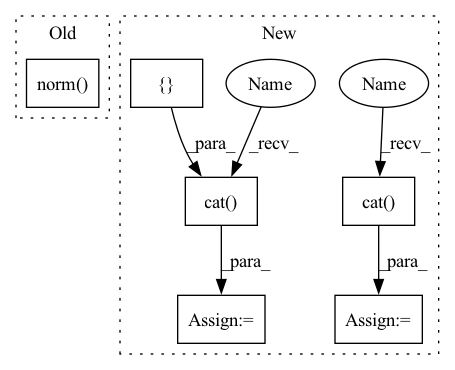

Pattern ID :2125
Before Change
real_loss = F.cross_entropy(real_y, real_label) // mean loss
fake_loss = F.cross_entropy(fake_y, fake_label) // mean loss
loss = (real_loss + fake_loss) / 2 + self.l2_reg_lambda * (self.W_O.weight.norm() + self.W_O.bias.norm())
return loss
After Change
real_label = torch.ones_like(real_y, dtype=torch.int64)[:, 0].long() // [1,1,1]
fake_label = torch.zeros_like(fake_y, dtype=torch.int64)[:, 0].long() // [0,0,0]
label = torch .cat( [real_label, fake_label], dim=-1)
loss = F.cross_entropy(pre_logits, label)
loss = loss + self.l2_reg_lambda * (torch.norm(self.W_O.weight, 2) + torch.norm(self.W_O.bias, 2))
pred = torch.cat([real_y, fake_y], dim=0) // bs*2
target = torch .cat([ real_label, fake_label,dim=0) // bs
acc = torch.sum((pred.argmax(dim=-1) == target)).item()
acc = acc / pred.size()[0]
return loss, accIn pattern: SUPERPATTERN
Frequency: 3
Non-data size: 6
Instances Fragment ID: 9107080
Project Name: rucaibox/textbox
Commit Name: f78c75cd5c890e60a063e95617768f9402a1d553
Time: 2020-12-14
Author: 1318829605@qq.com
File Name: textbox/module/Discriminator/LeakGANDiscriminator.py
M Class Name: LeakGANDiscriminator
N Class Name: LeakGANDiscriminator
M Method Name: calculate_loss(3)
N Method Name: calculate_loss(3)
M Parent Class: UnconditionalGenerator
N Parent Class: UnconditionalGenerator
M File Name: textbox/module/Discriminator/LeakGANDiscriminator.py
N File Name: textbox/module/Discriminator/LeakGANDiscriminator.py
M Start Line: 84
M End Line: 93
N Start Line: 86
N End Line: 101
Before Change
real_loss = F.cross_entropy(real_y, real_label) // mean loss
fake_loss = F.cross_entropy(fake_y, fake_label) // mean loss
loss = (real_loss + fake_loss) / 2 + self.l2_reg_lambda * (self.W_O.weight.norm() + self.W_O.bias.norm() )
return loss
After Change
real_label = torch.ones_like(real_y, dtype=torch.int64)[:, 0].long() // [1,1,1]
fake_label = torch.zeros_like(fake_y, dtype=torch.int64)[:, 0].long() // [0,0,0]
label = torch.cat([ real_label, fake_label, dim=-1)
loss = F.cross_entropy(pre_logits, label)
loss = loss + self.l2_reg_lambda * (torch.norm(self.W_O.weight, 2) + torch.norm(self.W_O.bias, 2))
pred = torch.cat([real_y, fake_y], dim=0) // bs*2
target = torch.cat( [real_label, fake_label],dim=0) // bs
acc = torch.sum((pred.argmax(dim=-1) == target)).item()
acc = acc / pred.size()[0]
return loss, acc Fragment ID: 9107086
Project Name: rucaibox/textbox
Commit Name: 9b5a6ec4e4a248b42892f4a8b7efc8a9a25630f7
Time: 2020-12-14
Author: 1318829605@qq.com
File Name: textbox/module/Discriminator/LeakGANDiscriminator.py
M Class Name: LeakGANDiscriminator
N Class Name: LeakGANDiscriminator
M Method Name: calculate_loss(3)
N Method Name: calculate_loss(3)
M Parent Class: UnconditionalGenerator
N Parent Class: UnconditionalGenerator
M File Name: textbox/module/Discriminator/LeakGANDiscriminator.py
N File Name: textbox/module/Discriminator/LeakGANDiscriminator.py
M Start Line: 84
M End Line: 93
N Start Line: 86
N End Line: 101
Before Change
tf.gather(inputs["mesh_pos"], receivers))
edge_features = tf.concat([
relative_mesh_pos,
tf.norm( relative_mesh_pos, axis=-1, keepdims=True) ], axis=-1)
mesh_edges = core_model.EdgeSet(
name="mesh_edges",After Change
velocity = inputs["velocity"]
node_type = F.one_hot(node_type[:, 0].to(torch.int64), common.NodeType.SIZE)
node_features = torch.cat( (velocity, node_type), dim=-1)
senders, receivers = common.triangles_to_edges(inputs["cells"])
mesh_pos = inputs["mesh_pos"]
relative_mesh_pos = (torch.index_select(mesh_pos, 0, senders) -
torch.index_select(mesh_pos, 0, receivers))
edge_features = torch.cat([
relative_mesh_pos,
torch.norm(relative_mesh_pos, dim=-1, keepdim=True), dim=-1)
mesh_edges = core_name.EdgeSet(
name="mesh_edges",
features=self._edge_normalizer(edge_features, is_training), Fragment ID: 9106943
Project Name: wwmark/meshgraphnets
Commit Name: 1ad048efb0f606f799674edb4d16a0554e54bf28
Time: 2021-10-24
Author: ruoheng.ma@gmail.com
File Name: cfd_model.py
M Class Name: Model
N Class Name: Model
M Method Name: _build_graph(3)
N Method Name: _build_graph(3)
M Parent Class: nn.Module
N Parent Class: snt.AbstractModule
M File Name: cfd_model.py
N File Name: cfd_model.py
M Start Line: 44
M End Line: 53
N Start Line: 63
N End Line: 75
Before Change
real_loss = F.cross_entropy(real_y, real_label) // mean loss
fake_loss = F.cross_entropy(fake_y, fake_label) // mean loss
loss = (real_loss + fake_loss) / 2 + self.l2_reg_lambda * (self.W_O.weight.norm() + self.W_O.bias.norm() )
return loss
After Change
real_y = self.forward(real_data)
fake_y = self.forward(fake_data)
pre_logits = torch.cat( [real_y, fake_y], dim=0)
real_label = torch.ones_like(real_y, dtype=torch.int64)[:, 0].long() // [1,1,1]
fake_label = torch.zeros_like(fake_y, dtype=torch.int64)[:, 0].long() // [0,0,0]
label = torch.cat([ real_label, fake_label, dim=-1)
loss = F.cross_entropy(pre_logits, label)
loss = loss + self.l2_reg_lambda * (torch.norm(self.W_O.weight, 2) + torch.norm(self.W_O.bias, 2))
Fragment ID: 9107075
Project Name: rucaibox/textbox
Commit Name: f78c75cd5c890e60a063e95617768f9402a1d553
Time: 2020-12-14
Author: 1318829605@qq.com
File Name: textbox/module/Discriminator/LeakGANDiscriminator.py
M Class Name: LeakGANDiscriminator
N Class Name: LeakGANDiscriminator
M Method Name: calculate_loss(3)
N Method Name: calculate_loss(3)
M Parent Class: UnconditionalGenerator
N Parent Class: UnconditionalGenerator
M File Name: textbox/module/Discriminator/LeakGANDiscriminator.py
N File Name: textbox/module/Discriminator/LeakGANDiscriminator.py
M Start Line: 84
M End Line: 93
N Start Line: 86
N End Line: 101